Proyecto de Análisis de Datos · Bolivia · gestión 2023 · segunda presentación
Ampliación: del análisis no penal a todas las materias y 17 años
Corregimos un denominador, usamos el capítulo 9 del Anuario para cubrir también lo penal, miramos la serie 2007-2023, comprobamos dónde está el problema y mostramos cómo cada técnica de la clase de preprocesamiento aparece en el proyecto.
Andrés Maximiliano Espinoza Romero · Andrés Gabriel Maydana García · Maximiliano Gómez Mallo
Fuente: Consejo de la Magistratura de Bolivia, Anuario Estadístico Judicial 2023 · informe CEJA 2025
Agenda
La exposición, en cuatro partes
Una corrección
Las «readecuadas Ley 439» de civil son stock inicial, no ingresos. Cómo se comprobó y qué cambió.
Todas las materias y 17 años
El capítulo 9 cubre también lo penal; la serie 2007-2023 y la comparación con las cifras del CEJA.
Dónde está el problema
Cuánto se concentra el rezago, qué explica la duración, qué recursos hay y qué probamos que no funcionó.
La clase, aplicada
Asimetría, discretización, contexto de grupo, variables temporales, correlación, PCA y outliers multivariados.
Antes de la parte 1, dos diapositivas ponen cada tema de la clase frente a lo que se hizo.
De dónde partimos
Una limitación que resultó ser parcial
El análisis anterior cubría solo la justicia no penal (47,5 % de las causas): los capítulos 5 y 6, que dan el detalle por tipo de proceso, no publican causas resueltas para las materias penales.
Pero el Anuario tiene un capítulo 9 que resume el movimiento de todas las materias: pendientes al inicio, ingresadas, atendidas, resueltas y pendientes al cierre. Y lo hace para 17 años.
Cinco notebooks nuevos (14 a 18) y una corrección al 10. Todo son archivos agregados nuevos: ninguna tabla anterior se modificó.
La clase de preprocesamiento · 1 de 2
Qué enseñó la clase y dónde está en el proyecto
| Tema de la clase | Estado | Qué se hizo | Notebook |
|---|---|---|---|
| 1 · Documentar y verificar | aplicado | Cada resultado pasa por una identidad o un cruce; todo queda en CSV nuevos; el notebook 13 lo vuelve a comprobar. | 14 a 17, 13 |
| 2 · Datos faltantes | aplicado | No se imputa: el 2023 del CEJA queda «sin dato», la duración solo existe donde hay resueltas, la columna de 2019 inconsistente se registra y no se usa. | 14, 15, 16 |
| 3 · Outliers: no borrar sin entender | aplicado | Ejecución penal se separa (no resuelve), 2020 es un extremo válido, 2018 y 2019 son inconsistencias registradas. Más asimetría y Mahalanobis. | 14, 15, 17 |
| 4 · Estandarización | parcial | z-score antes del agrupamiento, el PCA y Mahalanobis. Sin train/test: no se ajusta ningún modelo predictivo. | 16, 17 |
| 5 · Conversión de tipos | parcial | Heredada de los notebooks 04 y 06; las identidades detectarían una cifra leída como texto. | 04, 06 |
| 6 · Discretización y codificación | aplicado | cut con bandas del CEJA y qcut en terciles; las categorías entran como indicadoras, no como números. | 16, 17 |
Aplicado: hay código, resultado y archivo. Parcial: una parte o heredado de un notebook anterior. No aplica: la técnica necesita algo que este proyecto no tiene.
La clase de preprocesamiento · 2 de 2
Qué enseñó la clase y dónde está en el proyecto
| Tema de la clase | Estado | Qué se hizo | Notebook |
|---|---|---|---|
| 7 · Duplicados | parcial | Pares anticorrupción + violencia sumados una vez y capital + provincia = nacional: cada causa aparece una vez. La depuración de las 95 claves ya se hizo en la Fase 2. | 14, 15 |
| 8 · Feature engineering | aplicado | Razones, transform y merge con sufijos, shift, pct_change y rolling. Seno/coseno no aplica: la serie es anual. | 14, 15, 17 |
| 9 · Balanceo de clases | no aplica | No hay clasificación ni clase minoritaria. | — |
| 10 · Correlación y PCA | aplicado | Correlación sin eliminar columnas y PCA estandarizado. chi², RFE y SFS necesitan variable objetivo: no aplican. | 16, 17 |
| 11 · Integración y fusión | aplicado | merge m:1 validado, capital + provincia = nacional y capítulo 9 contra capítulos 5 y 6 (0 diferencias). | 10, 14, 15, 17 |
| Parte B · Clustering | aplicado | K-Means con k-means++, k = 2 a 7 y silhouette: máximo 0,425. No hay grupos naturales; no se adopta. | 16, 17 |
La clase trabaja con problemas que tienen variable objetivo. Este proyecto es descriptivo: por eso balanceo, selección supervisada y train/test no tienen a qué aplicarse, y el resto se usa para describir y controlar la calidad.
Parte 1 de 4
Una corrección
«Readecuadas Ley 439» no era un ingreso. Era el stock con el que empieza el año.
Parte 1 · La hipótesis
Cómo se llegó a la corrección
En civil, el Anuario publica cinco formas de ingreso, una de ellas «readecuadas Ley 439». El proyecto las había sumado como ingreso.
Pero esa columna ocupa en el cuadro la misma posición que «pendientes de la gestión anterior» en las demás materias, y sus valores son iguales al stock inicial del capítulo 9.
| Camino independiente | Resultado |
|---|---|
| Posición en el cuadro del PDF | la del stock inicial |
| Definición del CEJA 2025 | tasa de resolución = resueltas ÷ ingresadas del año, sin el stock |
| Capítulo 9 (9.1.1 y 9.1.5) | readecuadas = pendientes de inicio |
| Los 1.655 procesos | 1.180 publican stock inicial; 475 lo tienen como readecuadas; nunca ambos |
Verificar por dos caminos independientes. Aquí fueron cuatro, y coinciden.
Parte 1 · El efecto
Civil pasa de «crítica» a óptima
0,69
tasa de resolución de civil
1,01
tasa de resolución de civil
- Total no penal: de 0,83 a 1,01.
- Procesos que acumulan mora (tasa de resolución < 1): de 747 a 608.
- Las demás materias no cambian: ya publicaban el stock aparte.
- Tasa de resolución y tasa de congestión usan ahora los mismos denominadores que el CEJA.
Tabla: efecto_correccion_readecuadas.csv (notebook 10). Documentado en las páginas Decisiones y Límites de la web.
Parte 2 de 4
Todas las materias y 17 años
Notebooks 14 y 15: el capítulo 9 del Anuario, con controles y sus advertencias.
Parte 2 · Capítulo 9 · Controles
Antes de interpretar, comprobar
| Control | Resultado |
|---|---|
| Identidades atendidas = inicio + ingresadas y = resueltas + finales | 68 de 72 filas cierran; las 4 restantes difieren en 1 causa (ya registradas) |
| Capital + provincia = nacional (15 materias × 5 columnas) | 0 diferencias |
| Capitales + provincias = nacional (9 departamentos) | 0 diferencias |
| Total por otro camino: 9.1.9 contra la serie 9.1.12 de 2023 | iguales |
- Rótulos invertidos entre anticorrupción y violencia contra la mujer: se suman en pares; el mapa es cerrado y falla con un rótulo nuevo.
- Ejecución penal no resuelve (Anuario, p. 673): aparte, fuera de rankings.
- Etapas, no expedientes: la misma causa puede contar en más de una etapa.
Parte 2 · Capítulo 9 · Materias
Quién resuelve y quién tardaría años en vaciarse
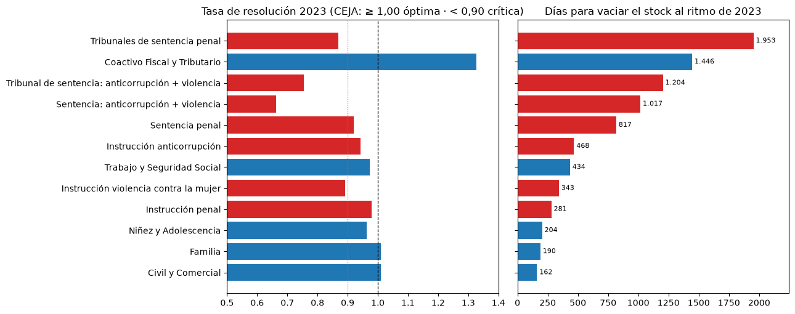
- Con tasa óptima solo están Coactivo (1,33), Familia (1,01) y Civil (1,01).
- Coactivo resuelve más de lo que recibe, pero tardaría 1.446 días: flujo y stock miden cosas distintas.
- Los tribunales de sentencia penal tardarían 1.953 días (≈ 5,3 años): la mayor entre las materias comparables.
Parte 2 · Capítulo 9 · El stock en 2023
El stock subió 19.114 causas, y casi todo es penal
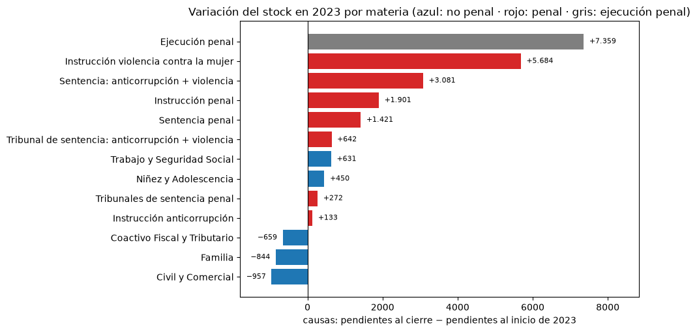
La justicia no penal redujo su stock. La acumulación está en lo penal, justo la parte que el análisis anterior no podía medir.
Parte 2 · Capítulo 9 · Territorio
Por departamento, con todas las materias
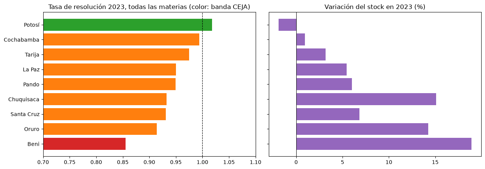
- Solo Potosí tiene tasa óptima (1,02). Beni es el único en banda crítica (0,85) y su stock creció 18,9 %.
- Santa Cruz suma +7.627 causas en el año, el mayor aumento absoluto, y tiene 33,4 % del stock.
Parte 2 · Capítulo 9 · Capacidad
Cuántas resoluciones más harían falta
Es aritmética, no un modelo: max(0, ingresadas − resueltas) y esa cifra más stock ÷ 3. Es un orden de magnitud, no una proyección, porque el stock publicado no se conserva entre años (diapositiva 17).
Parte 2 · Serie 2007-2023
Diecisiete años en una sola serie
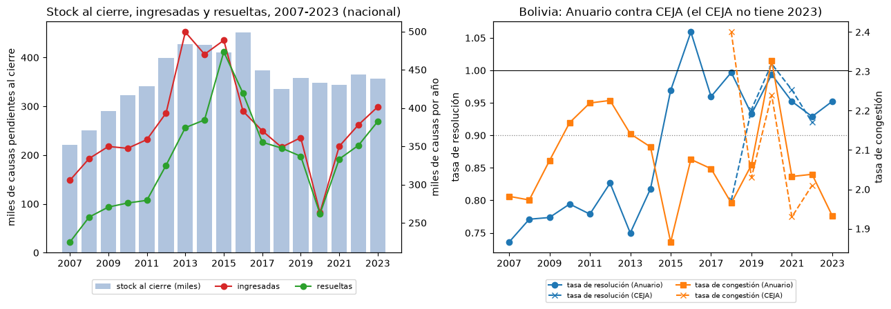
- Tasa de resolución: 0,74 en 2007, ≈ 1 desde 2015 y 0,95 en 2023.
- Congestión casi igual: 1,98 (2007) y 1,93 (2023). El problema es estable, no empeora.
- 2020: ingresadas −27 % y resueltas −22 % por la pandemia; en 2021 volvieron.
Parte 2 · Serie 2007-2023
Capitales y provincias no se separan tanto
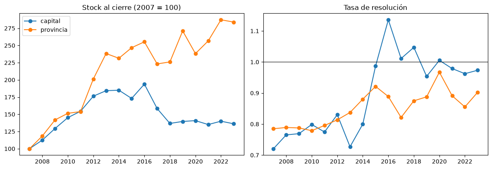
Stock al cierre (2007 = 100) y tasa de resolución de cada ámbito. La comparación capital contra provincia, la más mostrada en el primer análisis, es la que menos explica la duración (ver parte 3).
Parte 2 · Un hallazgo sobre la fuente
El stock publicado no se conserva entre años
Si el registro se conservara, las pendientes al inicio de un año serían las del cierre del anterior. En el Anuario la apertura es menor que el cierre previo en 15 de 16 transiciones.
Ejemplo: cierre 2022 = 364.680; apertura 2023 = 337.394; diferencia −27.286.
- No se sabe la causa (depuración, archivo, registro) y no se corrige ni se interpola.
- El stock no se puede reconstruir sumando flujos.
- Las tasas de cada año usan las cifras de ese año: no se afectan.
Parte 2 · Contra el CEJA
Nuestras cifras coinciden con las del CEJA (salvo 2018)
| Año | Resolución CEJA | Resolución Anuario | Congestión CEJA | Congestión Anuario |
|---|---|---|---|---|
| 2018 | 0,80 | 1,00 | 2,40 | 1,97 |
| 2019 | 0,94 | 0,93 | 2,03 | 2,06 |
| 2020 | 1,01 | 0,99 | 2,24 | 2,33 |
| 2021 | 0,97 | 0,95 | 1,93 | 2,03 |
| 2022 | 0,92 | 0,93 | 2,01 | 2,04 |
| 2023 | sin dato | 0,95 | sin dato | 1,93 |
- 2019-2022: diferencia máxima de 0,02 y 0,10.
- 2018 difiere mucho: otra fuente o una revisión; no se explica con estos datos.
- 2023, que el CEJA no tiene: resolución 0,95 («mejorable»), congestión 1,93 («en riesgo»).
Parte 2 · Resueltas por materia
Casi todo resuelve más que en 2021; una materia cae
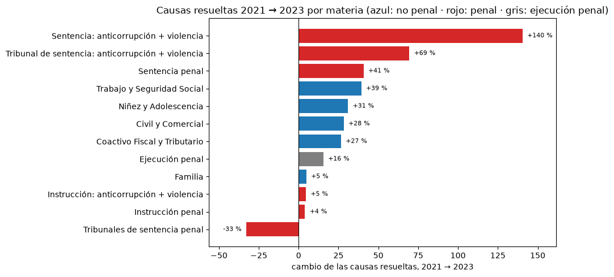
- Las cinco materias no penales resuelven más: de +5 % (familia) a +39 % (trabajo).
- Los tribunales de sentencia penal caen −33 %: 3.110 causas resueltas en 2020 y 1.811 en 2023.
- No se usa 2019: la columna de la tabla 9.1.10 no coincide con las otras dos (hasta 34.671 causas de diferencia); queda registrada.
Parte 3 de 4
Dónde está el problema
Notebooks 16 y 18: cuánto se concentra el rezago, qué explica la duración, qué recursos hay por departamento y qué probamos que no sirvió.
Parte 3 · Concentración
El 6 % de los procesos tiene el 73 % del rezago
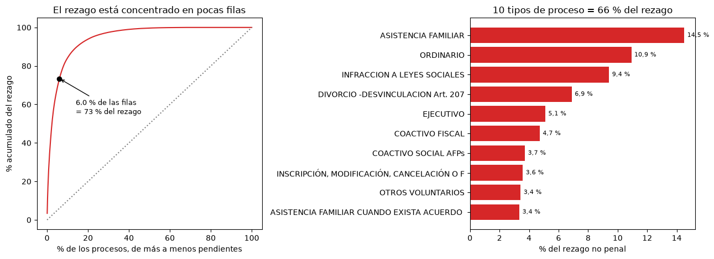
- 566 de 1.655 procesos no tienen causas pendientes.
- 10 de 87 tipos de proceso reúnen el 65,7 %: asistencia familiar (14,5 %), ordinario (10,9 %), infracción a leyes sociales (9,4 %).
- La Paz y Santa Cruz concentran el 66,6 %.
Parte 3 · Qué explica la duración
La unidad que importa es más fina que la materia
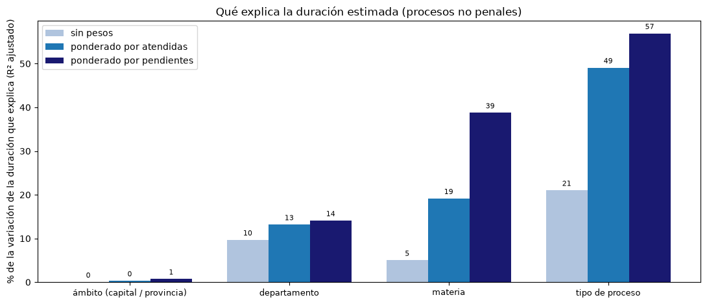
- Capital o provincia: menos de 1 %. No explica nada.
- Departamento: 10 a 14 %.
- Materia: 5 % sin pesos, hasta 39 % ponderado.
- Tipo de proceso: 21 % sin pesos, hasta 57 % ponderado.
R² ajustado de log(1 + duración). Es descripción, no causalidad; sin pesos queda sin explicar ≈ dos tercios.
Parte 3 · Lo que probamos y no adoptamos
El agrupamiento (K-Means) no encuentra grupos naturales
| Grupos (k) | Silhouette | Tamaños |
|---|---|---|
| 2 | 0,375 | 816 / 266 |
| 3 | 0,425 | 850 / 161 / 71 |
| 4 | 0,355 | 503 / 382 / 131 / 66 |
| 5 | 0,351 | 503 / 380 / 127 / 53 / 19 |
| 6 | 0,338 | 315 / 313 / 239 / 127 / 52 / 36 |
| 7 | 0,331 | 295 / 228 / 191 / 163 / 127 / 43 / 35 |
El índice de silhouette va de −1 a 1; cerca de 0,5 o más indica grupos claros. El mejor es 0,425 (k = 3), y separa 850 / 161 / 71: una masa normal y dos minorías extremas.
No se adopta como resultado. Las banderas de outlier del notebook 11 ya aíslan esos casos. Tampoco se ajustó ningún modelo predictivo: no hay variable objetivo que lo justifique.
Parte 3 · Recursos
Qué se tiene para atender la carga
Notebook 18: puestos de personal y órganos por departamento, cruzados con el movimiento de todas las materias.
Parte 3 · Recursos · carga por puesto
La carga por puesto varía 2,6 veces entre departamentos
| Departamento | Puestos ocupados | Ingresadas por puesto | Resueltas por puesto | Remuneración por resuelta | Tasa de resolución | Días para vaciar |
|---|---|---|---|---|---|---|
| Pando | 160 | 33,1 | 31,5 | 2,16 | 0,95 | 344 |
| Beni | 403 | 38,2 | 32,6 | 1,83 | 0,85 | 389 |
| Chuquisaca | 532 | 41,9 | 39,1 | 1,54 | 0,93 | 202 |
| Potosí | 552 | 49,2 | 50,1 | 1,22 | 1,02 | 334 |
| Oruro | 434 | 52,1 | 47,7 | 1,30 | 0,91 | 275 |
| Tarija | 507 | 57,1 | 55,6 | 1,05 | 0,97 | 309 |
| Cochabamba | 1.077 | 66,0 | 65,6 | 0,90 | 0,99 | 249 |
| La Paz | 1.480 | 66,2 | 62,9 | 0,93 | 0,95 | 369 |
| Santa Cruz | 1.305 | 84,8 | 79,0 | 0,73 | 0,93 | 422 |
- De 33,1 causas por puesto en Pando a 84,8 en Santa Cruz (mediana 52,1).
- El personal sigue a la demanda: ítems ocupados contra ingresadas, Spearman 0,90.
- Remuneración por causa resuelta: de 0,73 a 2,16 (1,0 = promedio nacional).
Un ítem es un puesto presupuestado; se miden los ocupados (sin vacantes). La remuneración es mensual y solo del personal.
Parte 3 · Recursos · dos clases de problema
Saturación en Santa Cruz, bajo rendimiento con carga ligera en Beni
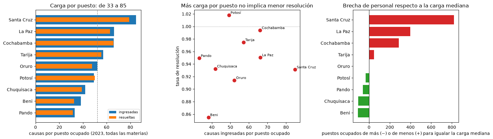
- Santa Cruz: la mayor carga por puesto, la remuneración por resuelta más baja (0,73), 422 días para vaciarse y el mayor aumento de stock.
- Beni: 38,2 causas por puesto, resuelve 32,6 y es el único con tasa crítica (0,85). No es un problema de volumen.
- Límite: ninguna de las 15 relaciones entre recursos y resultados es significativa (n = 9). Describe, no prueba. Falta la población del INE para pasar a causas por 100.000 habitantes.
Parte 4 de 4
La clase, aplicada
Notebook 17: las técnicas que la guía de clase proponía y el proyecto aún no mostraba, con los datos de la ampliación.
Parte 4 · Outliers y transformaciones · asimetría
El logaritmo arregla las cantidades, no las razones
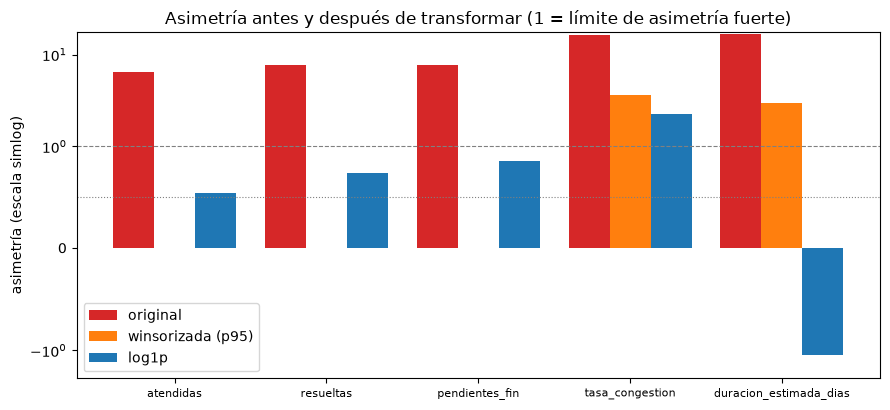
- Atendidas: de 6,5 a 0,54 con
log1p(fuerte → moderada). Igual en resueltas y pendientes. - Tasa de congestión: 2,26, sigue fuerte. Duración: −1,13, el logaritmo corrige de más.
- La winsorización reduce menos que el logaritmo.
Regla 5 de la clase: transformar no garantiza mejorar; hay que medirlo.
Parte 4 · Discretización · cut y qcut
Qué materias se concentran en lo crítico y en lo largo
| Materia | Crítica | Mejorable | Óptima | Duración corta | Media | Larga |
|---|---|---|---|---|---|---|
| Coactivo Fiscal y Tributario | 1,04 | 0,29 | 1,14 | 0,96 | 0,19 | 2,06 |
| Trabajo y Seguridad Social | 0,96 | 0,59 | 1,13 | 0,58 | 0,82 | 1,70 |
| Civil y Comercial | 1,15 | 1,22 | 0,83 | 0,82 | 1,10 | 1,08 |
| Niñez y Adolescencia | 0,98 | 0,75 | 1,08 | 1,50 | 0,69 | 0,83 |
| Familia | 0,86 | 1,20 | 1,06 | 0,93 | 1,30 | 0,70 |
cutcon las bandas del CEJA yqcuten terciles de duración. Cada celda es el índice contra la base: 1,0 es lo esperado si la materia no importara.- Civil está sobrerrepresentada en lo crítico (1,15) aunque su tasa agregada es 1,01. Coactivo (2,06) y trabajo (1,70) se concentran en lo largo.
Parte 4 · Feature engineering · contexto de grupo y tiempo
Lento por sí mismo o lento por su contexto
groupby().transform y merge
Cada proceso contra la mediana de su materia y ámbito: 198 de 1.122 tardan más del triple; entre los de 100 o más causas, 53 de 360.
El caso más extremo con volumen: «Otros con procedimiento especial» (niñez) en La Paz, 5.475 días: 58 veces la mediana de su grupo.
shift, pct_change, rolling
Las ingresadas saltan más de 15 % en 2013, 2016, 2020, 2021; 2020 y 2021 son la pandemia y el rebote.
Desde 2015 la tasa de resolución no tiene memoria entre años (autocorrelación −0,17): oscila alrededor de 1. Seno/coseno no aplica: la serie es anual.
Parte 4 · Reducción de dimensionalidad · correlación
Correlación alta no es motivo para borrar una columna
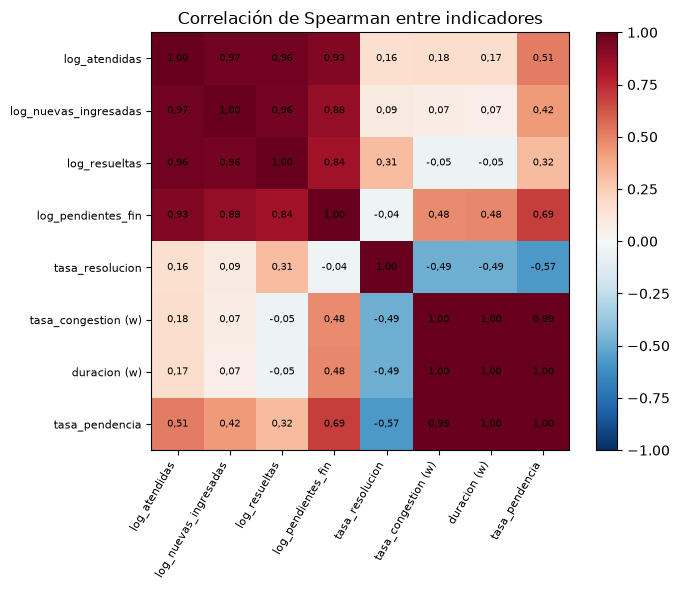
- 7 de 28 pares pasan de 0,90.
- 4 son identidades contables (
atendidas = resueltas + pendientes_fin): una |r| alta es esperada. - Los otros tres (congestión, duración y pendencia) se construyen con fórmulas emparentadas.
- No se elimina ninguna columna: la capa curada sigue con sus 118.
Parte 4 · Reducción de dimensionalidad · PCA
Una nube continua, sin islas
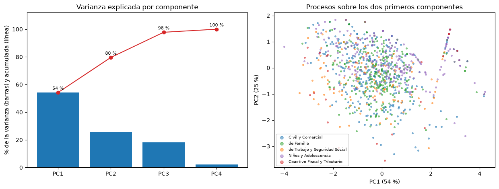
- PCA con variables estandarizadas: dos componentes explican 79,6 % y tres, 97,8 %.
- PC1 contrapone duración y pendencia a tasa de resolución; PC2 es volumen.
- Los procesos no forman grupos separados: confirma el silhouette bajo del agrupamiento (0,425).
Parte 4 · Outliers · multivariados
Combinaciones raras que ninguna variable muestra sola
- Distancia de Mahalanobis con umbral chi-cuadrado al 99,9 %. LOF y DBSCAN, los de la clase, necesitan
scikit-learn, que el proyecto no usa. - Son filas pequeñas con tasa de resolución cortada en 3 y sin pendientes: combinaciones atípicas, no errores. Se marcan, no se eliminan.
- Mahalanobis supone normalidad que estos datos no cumplen: es una marca para revisar.
Parte 4 · Las reglas de la profe
Cómo se cumplen en el proyecto
| Regla | Cómo se cumple |
|---|---|
| Separar train/test y ajustar solo con entrenamiento | No se ajusta ningún modelo; se mantiene riesgo_leakage y el R² es descriptivo. |
| No eliminar un outlier sin entender su origen | Ninguna fila eliminada; cada caso extraño tiene explicación o queda como marca. |
| Correlación no es causalidad; no borrar por |r| alta | Las 7 correlaciones altas se explican y se dejan. |
| Transformar no garantiza mejorar: comprobar | log1p sirve en cantidades y no en razones; el agrupamiento se descartó. |
| Documentar qué se transformó y por qué | Página de decisiones, controles y 20 CSV nuevos. |
| Guardar en columna nueva y preservar la original | Todo en archivos nuevos; la capa curada sigue con 118 columnas. |
| Verificar al terminar | Notebook 13: 12 bloques. |
Qué cambia
Lo que corrige o afina lo dicho en el primer análisis
| Antes | Ahora |
|---|---|
| Civil resolvía el 69 % de lo que ingresaba | Resuelve el 1,01: las readecuadas eran stock inicial |
| Solo se podía medir la mitad no penal | Se cubre el 100 % de las causas atendidas con indicadores de flujo |
| Coactivo fiscal era lo más lento | Con lo penal, los tribunales de sentencia tardarían 1.953 días contra 1.446 de coactivo |
| El análisis cubría solo lo no penal y no se veía dónde sube el stock | La no penal bajó su stock en 1.379; el aumento de 19.114 está en lo penal |
| Se comparaba capital contra provincia | La geografía que importa es el departamento; el ámbito explica < 1 % |
| Bolivia quedó fuera del índice del CEJA por falta de datos | 2023 con las fórmulas del CEJA: resolución 0,95, congestión 1,93 |
Límites y lo que sigue
Lo que esta ampliación no puede decir
- Los indicadores penales son de flujo (resueltas contra ingresadas). Los propios para penal, con sobreseimientos y salidas alternativas, siguen pendientes.
- El stock publicado no se conserva entre años; la duración sigue siendo un estimador de estado estacionario, no el seguimiento de expedientes.
- El capítulo 9 no tiene tipo de proceso: la lectura por materia es menos fina que la de los capítulos 5 y 6.
- Mide celeridad, no calidad de las decisiones.
Lo que sigue
- Fuentes externas: población (INE, Censo 2024), datos penitenciarios, presupuesto. Con la descomposición, el corte natural es el departamento.
- Indicadores propios para las materias penales.
- Seguir la pista de por qué el stock no se conserva.
En resumen
Más cobertura, un error corregido y el problema mejor ubicado
1 · Corrección
Las readecuadas son stock inicial. Civil pasa de 0,69 a 1,01 y el total no penal de 0,83 a 1,01.
2 · Todo el sistema
100 % de las causas atendidas y 17 años. En 2023: resolución 0,95, congestión 1,93; el stock sube 19.114 y casi todo es penal.
3 · Dónde está
El 73 % del rezago está en el 6 % de los procesos. Lo explica el tipo de proceso, no capital contra provincia.
4 · La clase, aplicada
11 temas de preprocesamiento y el clustering puestos frente al proyecto: 8 aplicados, 3 en parte y 1 que no aplica, y se dice por qué.
Documentación completa: la página de la ampliación · la web del proyecto · ¿Preguntas?